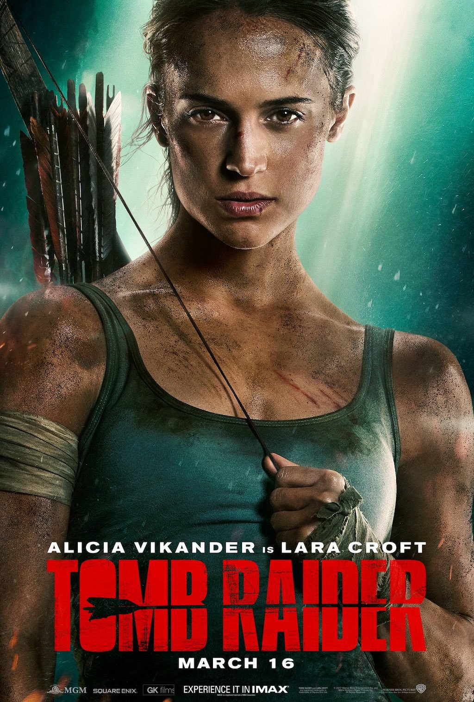
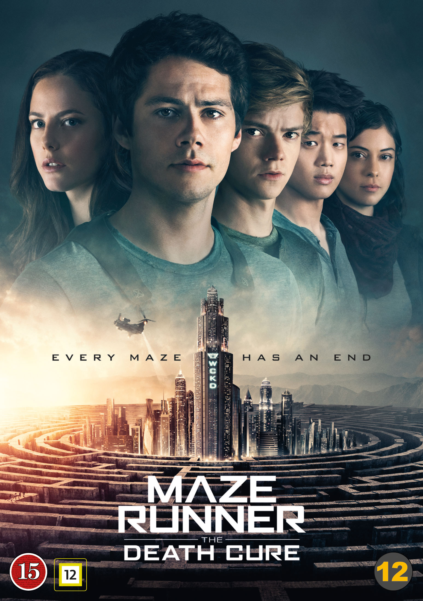
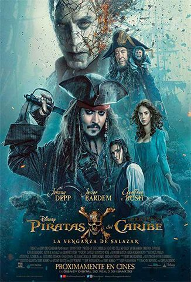
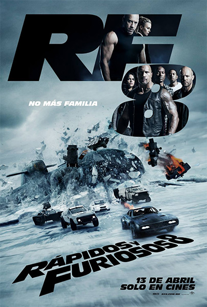

 Tomb Raider Lara Croft, la fuerte hija de un excéntrico aventurero desaparecido, debe empujarse a sí misma más allá de sus límites cuando descubre la isla donde su padre desapareció. Ver
La Pantera Negra T'Challa, el rey de Wakanda, sube al trono en la aislada y tecnológicamente avanzada nación africana, pero es desafiado por un forastero con sed de venganza debido a un error cometido por el padre de T'Challa. Ver
 Maze Runner: La cura mortal El joven héroe Thomas no puede confiar en la organización CRUEL, entonces con sus amigos se embarca en una misión para encontrar una cura para la enfermedad mortal conocida como La Llamarada. Ver
 Piratas del Caribe: La venganza de Salazar El temible capitán Salazar consiguió escapar del Triángulo del Diablo con la determinación de acabar con el capitán Jack Sparrow. Ahora Jack debe buscar el tridente de Poseidón mientras es cazado por un capitán no muerto y su tripulación. Ver
Kingsman: El círculo dorado Cuando su cuartel general es destruido y el mundo tomado de rehén, el viaje de los Kingsman los lleva a descubrir una organización espía aliada en Estados Unidos. Estas dos organizaciones secretas de élite deben juntarse para derrotar un enemigo en común. Ver
 Rápidos y furiosos 8 Cuando Dom y Letty están de luna de miel en Cuba, una misteriosa mujer logra que Dom traicione a aquellos más cercanos a él y se convierta en terrorista. Ahora todo el equipo debe juntarse de nuevo para enfrentar al hombre que los hizo una familia. Ver